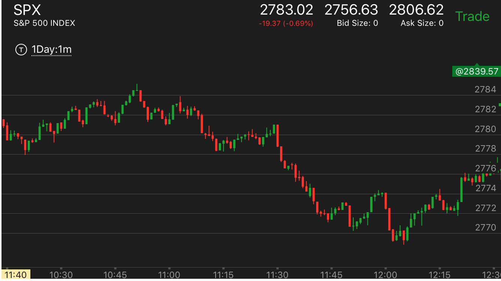

大幅运动后，回调很小，再次继续运动。这就具备了反转的动力
- 一开始很慢。比如走平很久。然后突然大幅冲高，然后回调很小，再次冲高。这样就具备了反转的动力。
一旦出现了走平的时候相对论头部，就会反转。这个是三段走势。
- 一开始就很快，大幅上涨或者下跌，然后回调很小，然后再从上涨/下跌。这样就具备了反转的动力。这个走势就是两段了

图示：开盘后，上涨很多，回调小，走平后，再次上涨。这样就具备了下跌的动力。

图示：开盘后，出现了相对论的下跌底部，然后开始反弹。它的第一个反弹很小。
就开始走平了，走平很久。7：10开始上涨后，速度很快。幅度很大。然后回调很小。再次上涨。
上涨的速度也超过了下跌的速度。在高点走平后。大跌。它就会下跌了。它下跌速度很慢。所以一定会低于上涨的开始点的。

图示：11:00开始下跌后，开始速度很慢。然后11：30下跌速度很快。这样就具备了反转的动力。
它后来大幅反弹后，快速下跌。说明要涨了。

图示：7：00开始的反弹，第一浪幅度就很大，速度也很高，然后走平，再次大幅上涨。这样的走势一定会反转。
而且反转后，创新低，因为它反转的是从最低点开始的走势。